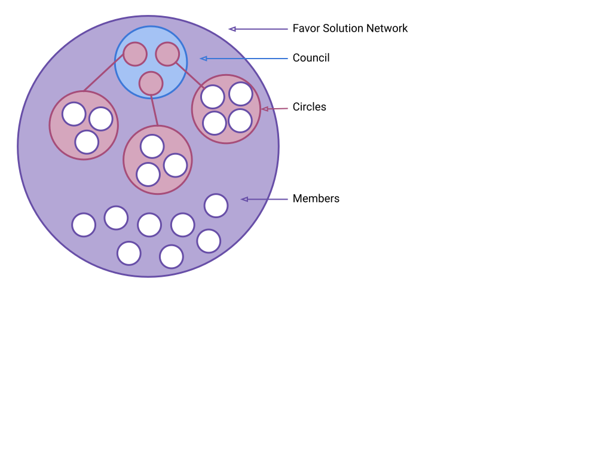

The Favor Solutions Network (“Favor SN” / “FSN” / “the Network”) is a mutual credit clearing system for voluntarily associated participants. It is made up of individuals and organizations (“Individual Members” and “Organization Members” / “Member Organizations”, together called “Members”) who wish to engage in mutually supportive economic interactions.
Favor is the name of the currency used in the FSN. Quantities of Favor are designated by a lowercase ‘f’ followed by a number, e.g. “f200” represents two-hundred Favor. Favor are exchanged within the Favor SN’s zero-sum ledger. Purchasers’ balances are reduced. Suppliers’ balances are increased. And, the Favor SN charges each party a transaction fee of 1% for providing the service. In this way, the total sum of balances always equals f0.
The purpose of the Favor SN is to facilitate the networked exchange of goods and services.
Favor’s core value to participants is free exchange.
No extractive structures shall be built into the FSN. This means that the Favor SN does not charge interest on negative balances, and the Favor SN does not offer interest bearing loans or otherwise make investments into individuals, projects, or organizations other than itself.
No part of the FSN’s structure is designed in a way which incentivizes or mechanically drives income inequality or socio-economic inequity. It is an economically neutral tool, which — even if wildly successful — would not repair economic injustice. It is, however, a critical tool for those who might — as it is also incapable of structurally increasing socio-economic inequity — unlike the U.S. Dollar and other central bank currencies, and also cryptocurrencies.
This Constitution describes the fundamental rules by which the Network is governed. This Constitution should seldom be changed. Granular processes and Policies ought to be more flexible. This Constitution outlines the need for various Policies and Processes. These Policies and Processes will be practiced in a living and consistently refining manner. A living record of them will be maintained in the Favor Policy Manual by those Circles which are responsible for their maintenance. This Constitution does, though, stipulate certain requirements for those Policies — what questions they must answer and affordances they must ensure.
The Favor SN is a social permaculture design project from the holistic design firm SQGLZ. The FSN is governed through benevolent dictation by Deacon Rodda of SQGLZ. Deacon Rodda shall serve as the final arbiter of all decisions until the Favor SN’s Circle governance system is functioning autonomously and has achieved the tasks necessary to initiate Phase Two.
When the Policies and Processes laid out in this Constitution have been fully drafted, the backend software and hardware have been configured to manage the ledger, and at least one front end interface is available for transactions, the FSN will begin to function under its own governance. Deacon Rodda will monitor this governance. If he cannot find a failure of the Circles to implement the specifics of this Constitution or the Policy Manual, then he shall declare the transition into Phase Two complete.
During Phase One, the Favor SN, its assets, and everything related to the project are to be considered property of SQGLZ LLC. Upon successful transition to self-governance, the FSN will own itself.
“During Phase 1, the Favor SN is a project of and the exclusive property of SQGLZ LLC;” it has been asked, “can ownership change? What does it mean that SQGLZ owns it?”
So, it just means that while we’re within the benevolent dictatorship phase, phase one, the FSN is a project of SQGLZ, a design project like Verbing Nouns Since When.
When the FSN enters phase two, it will be a self-owned, self-governed, juggernaut of community empowerment.
Individuals may join the FSN by completing the Membership Onboarding Process.
Organizations may join the FSN by completing the Organization Onboarding Process.
Individual Members leave, are suspended, or are removed through the Individual Offboarding Process.
Organizations leave, are suspended, or are removed through the Organization Offboarding Process.
Onboarding and Offboarding Processes are to be maintained in the Favor Policy Manual. Each Process is to be monitored and updated as needed to ensure:
Credit limits will change according to the Credit Limit Policy.
The Credit Limit Policy must be consistent for all Members of the two respective types, Individual Members and Organization Members — such that all Individual Members are treated the same as each other and all Organizational Members are treated the same as each other. The two types of Membership are not to be treated the same as each other by the Credit Limit Policy.
The Credit Limit Policy will require iteration to balance, and should seek:
The rules and mechanisms by which credit limits shall change will be maintained in public record on the Favor SN website.
By “change” does this include both the possibility of credit limits increasing and decreasing? If a credit limit decreases and you are at the limit prior to the decrease, what happens to the difference? What if the credit limit was f100, and then it changes to f90. What happens to someone who was at f100?
All of those questions are for the Economics and Finance Circle to determine, and for the Spokes Council to ratify. I (Deacon Rodda) do look forward to being a participant in the Econ Circle, but since I’ll just be another member and this is a post Phase One decision I can’t know how it’ll work in the end. What I can say is that we have this system where everyone just has their f1K credit limit until we find a passable solution.
Agree with this AND looking for details about how people will be informed that there is a credit limit change coming and what would be reasons this would happen?
I, personally, don’t think we need to put those details into the constitution, but anyone can drop in a suggested clause. I imagine that the issue of how transparency is maintained could be a project which spans all three of the starting Circles: econ, culture, and tech.
Oh! Also, the Policy Manual would be the place to look and ought to be pretty prominently available on the site — when they’re both further along.
Individual Members participate in governance through Circles. Individuals who are not Members of the Network may not participate in Circles.
Members can become Circle Members and participate in Circle processes through the various Circles’ Onboarding and Participation Processes. Each Circle’s Onboarding, Participation, and Offboarding Processes and Policies must be consented to by the Council both upon creation and whenever amended.
Each Circle’s Onboarding, Participation, and Offboarding Processes will be created to ensure:
The above criterion constitutes the basis on which the Council may scrutinize a Circle’s Onboarding, Participation, and Offboarding Processes.
These Circle Processes and Policies must be made public. Other internal Circle Processes and Policies may remain private.
Each Circle sends a single Circle Member as spokesperson to represent the Circle within the Council. The Council is made up of no other entities than these representatives.
While both individuals and organizations may be admitted to the Favor SN, only Individual Members may participate in governance and maintenance of the Network; Organization Members may not.
Individual Membership confers neither obligation nor right to participate in governance and maintenance of the FSN. Individual Members belonging to a Member Organization may participate in Circles. Their roles shall not constitute any relationship between either the Circle and the organization in question or grant the organization a role in governance and maintenance of the FSN.
For matters of procedure which ought to be more easily adjusted through iteration and dialog, the Favor Policy Manual will be maintained as a repository of the Network’s practices. These Policies describe specific critical operations of Circles and the Council.
Current thinking on best practices for Members will also be maintained in the Favor Policy Manual.
Differentiating between the above two types of inclusions in the Policy Manual: Circles and the Council must abide by, or change, their Policies, and update the Policy Manual. Members may use the Policy Manual as a guide in matters such as the valuation of goods and services, resolution of disputes, etc. Support which Members receive from the Network, however, may be limited if their use of Favor differs greatly from stated best practices.
In the event of a conflict between the two, the Constitution of the Favor SN, supersedes the Favor Policy Manual.
It is the responsibility of the Council to judge policy and decide on intended whole systems functionality. It is the responsibility of Circles to uphold these decisions through the tasks delegated to them by the Council upon the consent of each Circle to the tasks as delegated.
Policies to be maintained within the Policy Manual include, but are not limited to:
One Policy, alone, shall require 100% consent of all Favor Solutions Network members to be changed:
Balances shall incur no interest or fees. Transactions in Favor are not loans. There is no interest charged by the Favor SN for past charges.
No process other than unanimous consent of all Network Members can alter this clause of the Constitution in any way.
Should negative balances be incurred at all? What is the mechanism for increasing the number of Favor?
Re: incurring negative balances, yes, negative balances are crucial to the system. Assuming relative systemic balance, about half or more of all members should be negative at any given time. This is why not charging interest is so important. There’s nothing wrong with being under the baseline, it means being in a receptive space rather than a productive space. We want to optimize for rhythm and not gain.
I agree interest shouldn't be charged and appreciate that even here there is a mechanism to change it that is difficult but exists.
Re: changing the Immutable Clause, technically, yes. The rule can change. In practice, since 100% agreement must be achieved, allowing the network itself to charge interest would require literally killing the founder and any member who shares their convictions.
The Immutable Clause initially read, “Negative balances in Favor credit shall incur no interest or fees. …”
It now reads, “Balances shall incur no interest or fees. …” The immutable clause is meant to prevent market manipulation for class-centric reasons. The reason the dollar and other central banking systems include interest at the very inception of monetary issuance is that it ensures continual class division. Because of this mechanic, the rich must always get richer, and exponentially so — in the dollar denominated economy. So, that’s why it is important that negative balances not incur interest.
The change was made because it is equally important that positive balances not incur fees. While economic degrowth is a reasonable prescription in many sectors of the economy, it should not be backed into fundamental economic tools in perpetuity. A whole chapter in a book could be dedicated to this subject, maybe a whole book, but I’ll try to handle it briefly here.
Were a working group to form which asked Members to opt into contributions from their positive balances on an ongoing basis, contributions which would be contributed to some worthy effort, this could be a positive thing. It would, though, be a positive thing which needs to be managed and may — at times — need to be turned off or opted out of by individual members. Were it tied to the mechanism of issuance, and usage of the Favor extended into widely disparate regions, this fiscal degrowth mechanic would be detrimental to localized situations where growth is actually vital. Examples of such situations include:
Circles may be self-organized among Members. The creation of a Circle may also be initiated by the Council.
In order to form, a Circle must present the following documentation:
Once a Circle has been organized according to the above specifications it may be ratified by consensus of the Council. The Council may choose not to ratify a Circle if the Circle’s Statement of Purpose does not present a meaningful and beneficial addition to the Council.
Ratified Circles will have a seat at the Council.
It is the responsibility of each Circle to choose their Council representative. Circle’s may determine their representative by any means and frequency which suits the Members of that Circle.
The drafting and maintenance of Policies listed in this Constitution is to be delegated to Circles by the Council. The Council will then come to consensus on these Policies or send them back to the Circles for revision until complete. These Policies are to be documented in the Favor Policy Manual. Circles will maintain the Policy and Process documents for which they are responsible for view by the public in locations to be specified in the Policy Manual.
Circles are responsible for implementing the decisions they make over their respective domains and submitting proper documentation according to the Transparency Policy.
Circles may choose to dissolve or be dissolved by the Council following that Circle’s Dissolution Process. Each Circle’s Dissolution Process must account for the handing off of all of its responsibilities. Even if a Circle intends to exist in perpetuity, it must have a plan for possible dissolution. This plan must exist before the Circle’s ratification.
Do all circles need to be ratified? Is there an exception for the starting circles?
So, this is where benevolent dictation is handy. The three critical Circles are starting before the end of Phase One, so I’m instantiating the core three Circles by decree … you know, with the consent of all involved, ‘cause that was the deal.
What if someone is both on the Council and in a Circle? It seems like the Council is made up of members of Circles.
Yes, every person in the Council will have executive responsibilities as members of their Circles. What this means is that the Council cannot create anything, draft a policy, change the website, really do anything itself. The Council must deligate.
Are each Circle's responsibilities intended to be mutually exclusive, or can they overlap?
I believe that a strict reading of the constitution as it stands would allow for overlapping thinking, work, and operations. It would be a responsibility of the Council to determine what is beneficial redundancy and what is in conflict.
For instance, if a Circle wanted to form which offered Authentic Relating as a part of the grievance remediation/prevention process, this might be an alternative to the mediation and reconciliation of the primary Culture Circle — without any conflict. Essentially, where conflicting mechanics are not introduced, redundancy is potentially ideal.
The Council is made up of representatives from each Circle.
The Council makes decisions by full consensus, with one exception. When a decision concerns the responsibilities of one specific Circle, that Circle’s position is recorded but cannot block consensus. In this way a Circle cannot block the moving of a responsibility to another Circle if it is the unanimous will of the remaining Circles, or block its own dissolution by the Council.
Circles are responsible for their internal management. The Council is responsible for the evaluation of the performance of Circles.
The Council makes final determinations concerning the responsibilities of each Circle and may specify requirements for the satisfactory fulfillment of those responsibilities.
The Council, as a group, cannot assume executive responsibility. Executive responsibilities include the direct management or performance of tasks and providing of services involved in fulfilling the needs of the Network. The Council, as a working group, exists to specify, delegate, and scrutinize the fulfillment of responsibilities. The Circles exist to determine how those responsibilities will be fulfilled — at a technical level — and to complete the tasks involved.
Is there any oversight members are afforded re: the Council? For example, if the Council is acting outside of its stated powers, could the members call a special meeting?
The affordances to Individual Members for influence and resolution — in increasing order of effort required and impact possible — include:
It is the opinion of the founder that this is super-way-more-than-enough because the Favor SN is, and should always be, little more than a ledger and the minimum amount of supporting affordances to maintain its vitality of usage.
What happens if a Circle or Individual Member disputes the results or the representation of the Council?
So, that’s four questions:
1) If a Member disputes a decision of the Council
The best thing for a Member to do if they disagree with a decision of the Council is to state an awareness on the Community Mastery Board and trust that the Culture Circle will take their concern to heart. In that way, people who are being compensated for solving such problems can take responsibility and we, as a Network, can reduce the wasted wheel spinning that often accompanies discontent.
1) If a Circle disputes a decision of the Council
If a Circle or its Members are displeased with a Council decision, they should take it up with their representative, work on their internal communication, improve their representative selection process, or employ their representative selection process to redress the concern.
Since the Council works on consensus, no Circle should be left out of any decision. The only exception is decisions concerning that specific Circle. So, if the Tech Circle splits into backend and front end Circles, and at some later time the Council determines that the Front End Circle will be managing user data management and the Back End Circle doesn’t like it — well, tough cookies.
1) If a Member disputes the representation of the Council
The groups represented on the Council are representatives from each occupational division within the Network’s administrative apparatus. So, if there is some missing or under-represented occupational component of the Network then a Circle ought to be formed around that occupation.
For instance, the Econ Circle might determine that the best way to bolster engagement with the Network is to facilitate delivery of goods. The Econ Circle then begins to pay couriers and focus brokering efforts heavily on meeting the needs of couriers to keep them happy and keep Favor flowing. Well, if this worked out, then it would make a lot of sense for couriers to simply have their own Circle. This type of representation concern is in keeping with the nature of the Network and should be addressed in this way.
Other concerns about representation are either moot or accounted for in other policies — for instance: the policy concerning transparency in Circle Onboarding. If Circles are gatekeeping on the basis of identity ( in any direction ), this awareness ought to be raised and dealt with. The entire Network will suffer if this is allowed — even with the best of intentions.
1) If a Circle disputes the representation of the Council
Circles get to choose their own representatives, so there should be no dispute here. Circles do not get to choose other Circles’ representatives, so there are no valid disputes there.
Council decisions supersede Circle decisions.
Member concerns are addressed and moved toward resolution using the Community Mastery Board Process and Grievance Process.
Members may call Special Meetings by following the Special Meeting Process. The Special Meeting Process will outline the steps for calling a Special Meeting of the Favor SN. Calling a Special Meeting will require that documentation of the following are comprehensively and intelligibly provided:
All Individual Members of the FSN may attend a Special Meeting. All Council Members must attend each Special Meeting. A Circle whose Council Representative cannot attend a Special Meeting must determine a new representative. Each special meeting must be facilitated by a member of the Culture Circle who is not a Council Member. The Special Meeting Process may specify terms by which other Members are requested or required to attend Special Meetings. The Special Meeting Process will also include provisions for the following concerns:
Circles determine their own meeting methods, norms, and processes.
Council quorum is reached once each Circle is represented by one unique person. A Member may be a member of multiple Circles, but may not represent more than one Circle in the Council.
The Favor SN is opposed to the use of the filibuster. The expectations of Circles to provide a Council representative, and the solution for actions which functionally amount to filibuster and block consensus through refraining from dialog, shall be covered in the General Meetings Policy.
The Member who represents a Circle in the Council must represent that Circle according to that Circle’s documented decision-making processes.
Council meeting notes and decisions are to be posted publicly according to the Transparency Policy.
Concerning the statement, “Circle and Council meeting notes and decisions are to be posted publicly according to the Transparency Policy, ” it was asked, “Does this mean available to anybody on the internet, or available to all FSN members?”
Anyone on the internet can read the Council rulings because it may inform their decisions about whether or not to participate in the FSN.
Essentially, I believe that it would be a mistake for us to be less transparent than the Fed — or any other monetary authority.
Concerning that same clause, Circles have been exempted from this clause.
I removed Circles from this clause. I don’t believe that each meeting about server configuration and probate regulations needs to be publicly documented, only the end results in the form of the Policy Manual. In some cases, perhaps many, it will be efficacious for an article to be written regarding some decision or technological development. In these cases, meetings notes are generally insufficient anyhow. Meetings are held between specialists and are full of various forms of shorthand communication. If a development is to be communicated broadly, it should be crafted for that purpose with deliberation.
The Council controls Favor SN funds, approves budgets (in Favor and other currencies held by the Network), and sets Favor credit limits for Circles.
The Council may change the Constitution according to the following process:
The Council must make reasonable effort to contact all Individual Members and notify them of the pending change. Concerns are merely included in the documentation for the amendment. Objections must be reviewed to determine whether they meet the criterion of a Relevant Objection. In the event of a Relevant Objection the Council must do one of the following:
Categories of Relevant Objections
Examples of Invalid Objections
Alteration of the Immutable Clause, alone, requires the explicit consent of all Members.
Regarding the set of invalid objections it was asked, “Are these examples of relevant objections, or the only objections that are considered relevant? What are the criteria for what makes an objection relevant vs irrelevant?”
Essentially, the examples are listed because they are some of the most common knee-jerk complaints which are posed as arguments. This set of examples is not meant to be seen as exhaustive. What makes each of the examples in the example set invalid is that they represent categorically unsound or invalid thinking ( splitting purpose, appeal to emotion, appeal to bandwagon or irrelevant authority ). Including this set in the constitution puts into the DNA of the organization that it will not stand for knowably false claims.
Unknowns are another matter. There are times when we will have to wade into best guesses and simply iterate toward our best discoverable solution. This clause is not about that. This clause provides a check against negligence.
This may seem like a small thing, but consider the U.S. Justice Department. It is well established that an appeal to consequences is fallacious reasoning, but everyday courts embrace this practice to disastrous ends. And, even though this type of thinking was conclusively shown to be broken thinking centuries ago — a demonstration which has never been challenged — there are no affordances for oversight on these grounds.
Essentially, this clause shows that if anyone can point to the emperor and say, “Hey, that guy’s naked!” that it doesn’t matter what they’re position in the organization is, the nakedness cannot be denied. It doesn’t take a majority or even a group. One person will do.
To make things simpler, what makes an objection invalid is that it is not in the list of valid objections, which is meant as an exhaustive list — an exhaustive list of types. So, the types of objections which are valid include:
Reason one is critical because it means that Members can spot mistakes that the Council didn’t notice which would create an internal contradiction within the system. Reason two helps to keep us out of trouble and conflict with more powerful organizations, and more powerful natural forces — in the case of physically hazardous choices. Reason three is subtle but critical. Remember that we’re talking about Constitutional amendments, which already overrule policies. But, if a Member notices that a Constitutional amendment will nullify some aspect of a policy, but doesn’t provide a solution for the purpose the doomed policy served, well, that’s a big deal.
Reason four is actually my favorite. It is the universal bullshit card. It means that any Member can just demonstrate why a Constitutional change is a bad call for objective or empirical reasons. If any other legislative body had a clause like this there would be a lot fewer laws — especially regarding compulsory education, public safety, pollution, and drugs. The majority of laws in each of these areas are demonstrably counterproductive regarding their stated aims.
The biggest thing to keep in mind here is that these are the only reasons that a person can object to a Constitutional amendment. The Constitution may be added to for creative purposes not yet known, as long as they don’t walk directly into one of the above ready-made objections. This whole clause is about clearly constraining the capacity to block the process of change. It is more likely that something has been overlooked which needs to be accounted for additively than that something which has been given substantial thought should be easily dismissed.
An important example of additive changes would be adding a type of valid objection to the list of valid objections. Of course, it can’t contradict any other statement in the section without being easily overruled. This makes the rule set very safe and sensible. Essentially, we can know that — even if the rules which exist at present are insufficient — if they are not bad rules that the problem can resolve itself rather simply.
There are a number of actions and failures to act which could bring about the collapse of the Favor Solutions Network. Among them are:
Avoiding these failures is beyond the scope of any constitution or policy. These are matters of human moral strength, mental discipline, and patient awareness. These pitfalls cannot be designed out of a system — and if they could, they should not be. Overcoming these failings is the very adventure of our lives.
Should the Favor SN fail entirely in these or any other ways, ceasing to functionally exist, Members will be without recourse to settle their balances. All who participate in the FSN do so of their own free will, acknowledge that Favor are not dollars (meaning that, outside of the Network, no one is owed anything or owes anything for the balances maintained here). As such, Members accept the possibility of systemic collapse and its adjoining annulment of all monetary balances on the ledger of the Favor Solutions Network.
The stated purpose of the FSN is, “…to facilitate network exchange of goods and services.”
Primarily this is to the exclusion of the pyramidal extractive exchange structure enforced by central banking and investment capital mechanics. More here
Secondly, no other political aim may be added to the FSN. It is for one thing, facilitating non-extractive transaction — broadly. It is not for anything else. And, to attempt to force it to serve another purpose would undermine its core intent.
Join the Conversation!